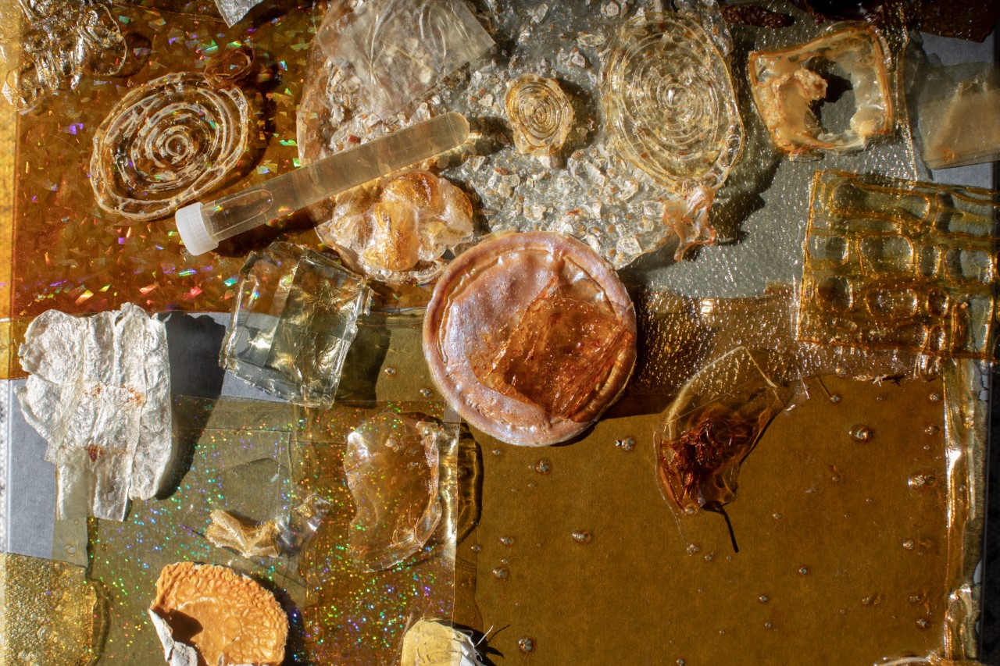
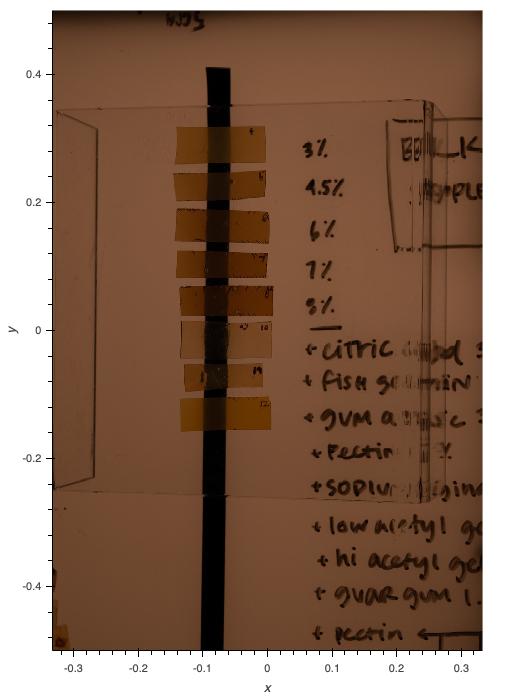
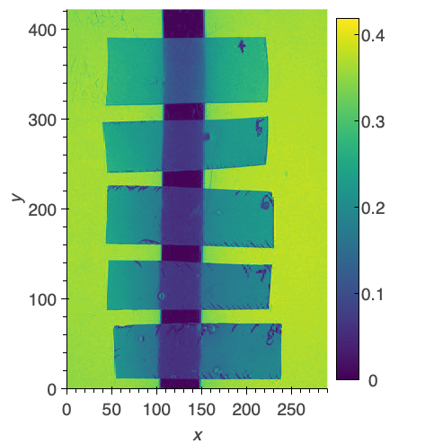
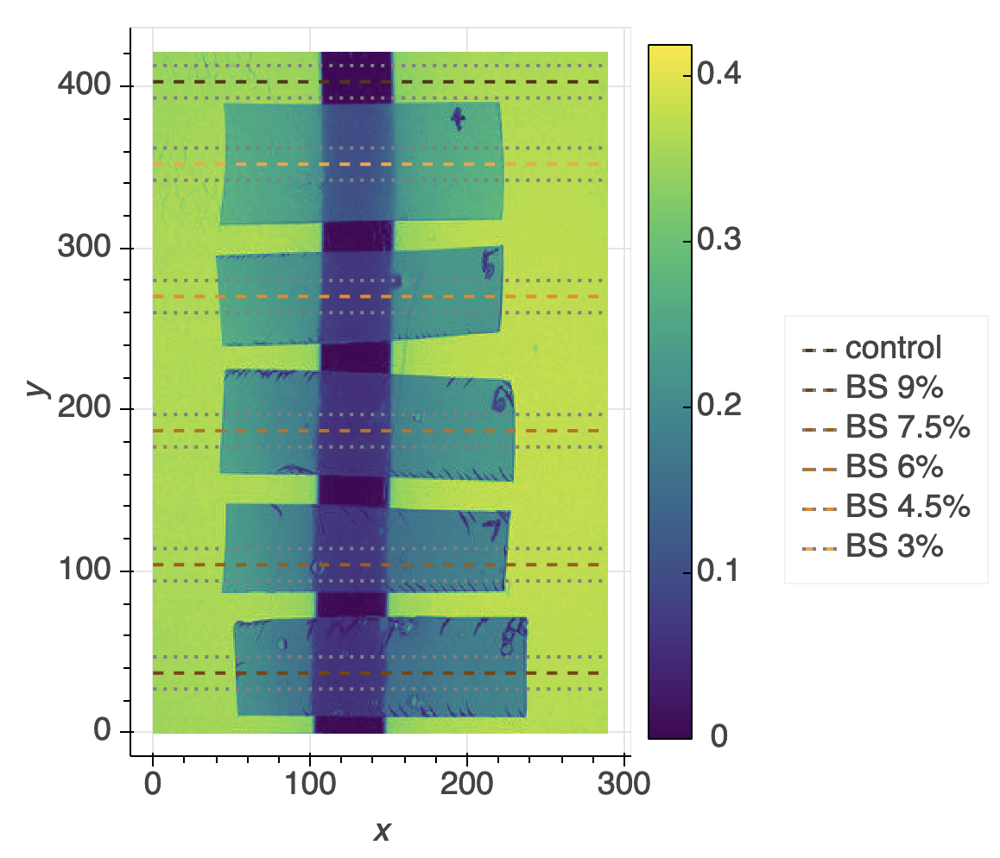
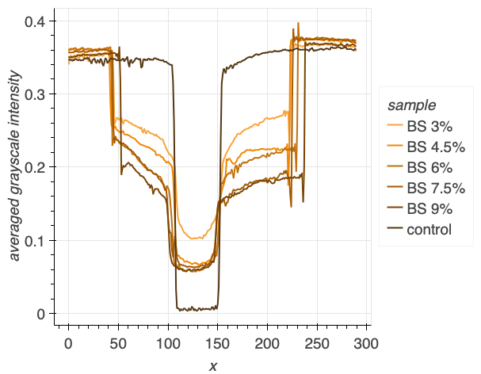
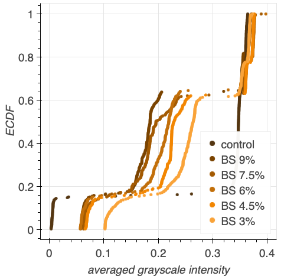

Sasha Fishman
Visiting artist/researcher, Kornfield Lab Summer 2020
Photograph by Irena Stein, via Sasha Fishman
Sasha Fishman is a sculptor and researcher whose artistic practice incorporates biomaterials extraction, especially from marine organisms.
In 2020, she reached out to the Kornfield lab to learn more about materials science and development as part of her quest to create a clear, nontoxic, bio-based, degradable alternative to epoxy resin.
Alongside my labmates Tiziana Di Luccio and Priya Chittur, I served as a mentor for Sasha. We also consulted with Rob Learsch and Red Lhota. In addition to assisting with image analysis for investigating the optical properties of Sasha's materials, I provided mentorship regarding scientific mindset development, project managment, and scientific communication.
Project background
Epoxy resin is an amazing sculpting material because it is optically transparent, lightweight, castable, and durable. However, the process of manufacturing it, using it, and degrading it is toxic to both the environment and to humans. As a resin sculptor with an interest in sustainability and marine life, Sasha sought out an alternative to this petroleum-derived material.
Sasha identified some interesting bio-derived materials that would fit into her practice, including microbial cellulose, mycelium, agar, and chitosan. However, none of these materials were durable and could not be cast into large sculptural forms. To learn more about the science and engineering of materials, she joined the Kornfield lab as a visiting artist/researcher.
During her work with the Kornfield lab, Sasha specifically focused on the development of chitosan as a resin alternative, alongside the possibility of incorporating hagfish slime threads as an alternative to fiberglass reinforcement. She assessed the pre-casting viscosity of her materials and the post-drying optical properties as compared with the typical resins she uses in her practice.
Learning outcomes
Due to COVID-19 pandemic restrictions, Sasha was not able to physically access the laboratory for the duration of this project. We had to come up with creative data collection methods that she could DIY in her home or studio.
Scientific mindset development
Prior to joining the Kornfield lab, Sasha had an interest in DIY and citizen science. On her own, Sasha had already begun documenting her experimentation with biomaterials, noting concentrations and conditions.
I provided further guidance in the scientific process; i.e. stating a hypothesis and determining what experiments would provide evidence for or against the hypothesis. In addition, I advised Sasha in performing experiments under controlled conditions to ensure replicability and accuracy. By the end of the summer, Sasha was able to design rigorous experiments to test hypotheses about the effect of changing the concentration of chitosan or pH of the chitosan solution on the resulting dried materials.
Project management
As a new scientist, Sasha wasn't yet confident in managing a multi-component scientific project. However, she ambitiously tackled experiments in viscosity, optical haze, and light scattering. I provided advice on data management and scientific notebook record-keeping. Sasha developed a system to organize her files and notes, allowing her to write a complete report at the end of her project.
Scientific communication
As part of the requirements of her funding source, the Caltech Visiting Undergraduate Research Program, Sasha prepared several progress reports, a final written report, and an oral presentation. I reviewed written materials and provided feedback on structuring scientific communication and explaining results. In addition, exposure to my contributions to Sasha's data analysis (below) and to my own research piqued Sasha's own interest in data visualization.
Analyzing optical haze of biomaterials
Sasha's ideal sculpting material would have optical clarity similar to glass or existing resins, with the ability to add pigment as desired. I assisted her with analyzing the haziness of her materials after drying. Building off of MATLAB code written by Tiziana Di Luccio, I wrote a Python notebook to process photographs of Sasha's samples.
Sasha cast thin samples of chitosan from solutions in different concentrations and with different additives to achieve varying pre-casting viscosities. After the materials dried, she cut rectangular samples from each. To assess the optical haze, she placed the samples on a clear acrylic platform over a stripe of black tape and photographed.
First, we loaded the photograph.
Then, we converted to grayscale and cropped to the samples of interest for the analysis. Here, the grayscale image is shown in the viridis colormap.
Next, we chose regions to analyze. We picked bands of 21 rows running through approximately the center of each sample.
We quantified the intensity of each pixel in each row and averaged the rows for each band. From these plots, Sasha could assess the samples' clarity. Hazier samples resulted in rounder edges at the border of the black tape, indicating blurring, and higher intensity at the center of the location of the black tape, indicating scattering. 'BS' indicates Bulk Supplements, the supplier of the raw chitosan powder.
In addition, we plotted the empirical cumulative distribution function (ECDF) for the intensities in each band. This allowed us to assess what percent of pixels in the row belonged to each regime – outside sample, within the sample, and within the sample and the black tape – and the sharpness of the transitions.
Although Sasha did not have much experience with coding, she was able to interpret the results of the analysis and incorporate them into her presentations and reports.
haze_image_analysis is maintained by lealiaxiong.
Sasha will be a sculpture MFA candidate at Columbia in Fall 2022. See her work at sashafishman.com.